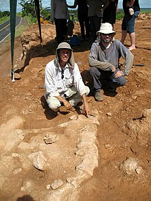

Marília é um município brasileiro do estado de São Paulo. Situa-se na região Centro-Oeste Paulista. Fica distante da capital do estado 443 quilômetros por rodovia; 529 quilômetros por ferrovia e 376 quilômetros em linha reta. Localiza-se à latitude de -22° 12' 50" S e longitude -49º 56' 45" W, estando a uma altitude de 679 metros. Possui uma área de 1.170,054 quilômetros quadrados, dos quais 23.040 estão em zona urbana. Tem seu nome tirado da obra "Marília de Dirceu", de Tomás Antônio Gonzaga.O município é formado pela sede e pelos distritos de Amadeu Amaral, Avencas, Dirceu, Lácio, Padre Nóbrega e Rosália.
O município desponta como pólo educacional paulista, contando com quatro instituições públicas de nível técnico e superior (Unesp, Famema, Univesp e Fatec) e instituições privadas como Unimar, Faef, Univem e Anhanguera. Em 2017 foram contabilizados 74 cursos de graduação, sendo administração e pedagogia os mais ofertados. Marília tem uma média de um estudante universitário para cada 18 habitantes.[11]
Por conta de seu parque fabril no setor de alimentos, é comum que alguns bairros do município recebam o aroma de doces, biscoitos e chocolates por diversas vezes ao dia e a noite, já que empresas como a Marilan, funcionam ininterruptamente. Diversas empresas de projeção nacional e internacional foram fundadas em Marília, como o Banco Bradesco, a Tam Linhas Aéreas, a Sasazaki, a Marilan e a Dori.
Paleontologia

Há cerca de 70 milhões de anos, a região onde hoje fica Marília e o oeste paulista foi habitada por dinossauros e outros animais pré-históricos. Esses animais tiveram seus restos ósseos petrificados em sedimentos arenosos de primitivos rios e lagos. Com as transformações geológicas ocorridas ao longo do tempo, esses ambientes primitivos se modificaram, e os sedimentos se transformaram em rochas, conhecidas principalmente como arenitos, e os ossos se tornaram fósseis. Essas rochas são as mesmas que hoje constituem as serras e escarpas que rodeiam a cidade, como os paredões de arenito do vale do Barbosa na Via Expressa, a Serra de Avencas, o vale do Pombo, a Serra de Dirceu (adiante do aeroporto) e muitas outras.
O registro inicial da presença de dinossauros na região de Marília ocorreu em 1993, com a descoberta, pelo pesquisador William Nava, dos primeiros fósseis comprovadamente pertencentes a dinossauros (titanossauros) achados numa estrada municipal, 16 km a norte da cidade. Essa descoberta colocou Marília na rota dos dinossauros, revelando mais uma região fossilífera para a paleontologia brasileira. Outro achado importante para a paleontologia foi a descoberta (a partir de 1995) de fósseis de um pequeno crocodilo da era dos dinossauros, em rochas da formação Adamantina, próximas ao Rio do Peixe, sul de Marília. Esse crocodilo recebeu, inclusive, o nome da cidade, sendo batizado em 1997 como Mariliasuchus amarali. Seus restos fossilizados têm permitido uma melhor compreensão acerca dos ecossistemas do passado. Outro pequeno crocodilo fóssil achado na região é o Adamantinasuchus navae.